par christoph
En version 0.8.6, WhiteCat est fourni avec un layout pour TouchOSC, pour téléphones et tablettes. Ce Layout a été affecté à la sauvegarde LAYOUT TELECO PHONES. Les affectations midi sont déjà faites. TouchOSC est un petit programme pour iOS et Android, payant, qui permet de piloter soit en OSC, soit en midi des applications.
Pour l'instant je n'ai pas réussi à rafraichir les données depuis WhiteCat vers TouchOSC. iCAT reste résolument le bon outil à utiliser avec WhiteCat. Cependant, vous pourrez utiliser TouchOSC comme télécommande ou contrôleur d'appoint.
Pour mettre en réseau TouchOSC et WhiteCat, vous risquez de devoir installer RTP Midi ( cf * Recevoir le midi d'un appareil émettant en CORE-midi sur le réseau ).
Vous pouvez télécharger sur le site de TouchOSC deux utilitaires:
Il est possible que vous deviez utiliser RTP midi comme passerelle pour envoyer les layouts depuis TouchOSC editor vers votre téléphonne/tablette.
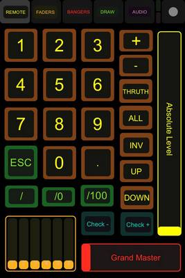
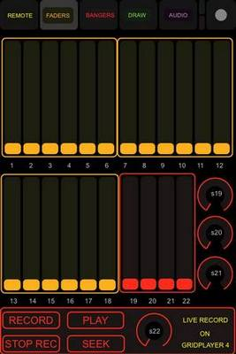
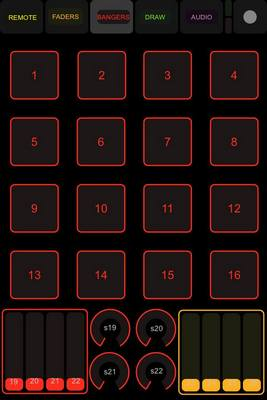
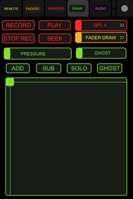
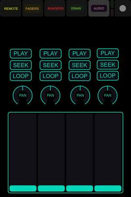
Une fois installés RTPMIDI (qui me sert à faire communiquer l'éditeur et TouchOSC) et TOUCHOSC BRIDGE (pour la communication en jeu entre TouchOSC et WhiteCat):
créez un réseau ad hoc entre votre ordi et votre téléphone / tablette. Il faudra préciser des adresses IP fixes dans le même univers. Pour moi mon PC est 2.1.1.1 et mon téléphone 2.1.1.2.
Voir Créer une connexion ad-hoc
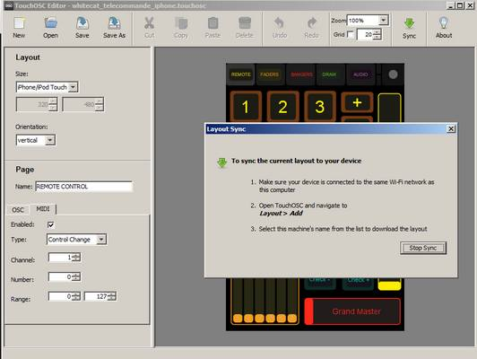
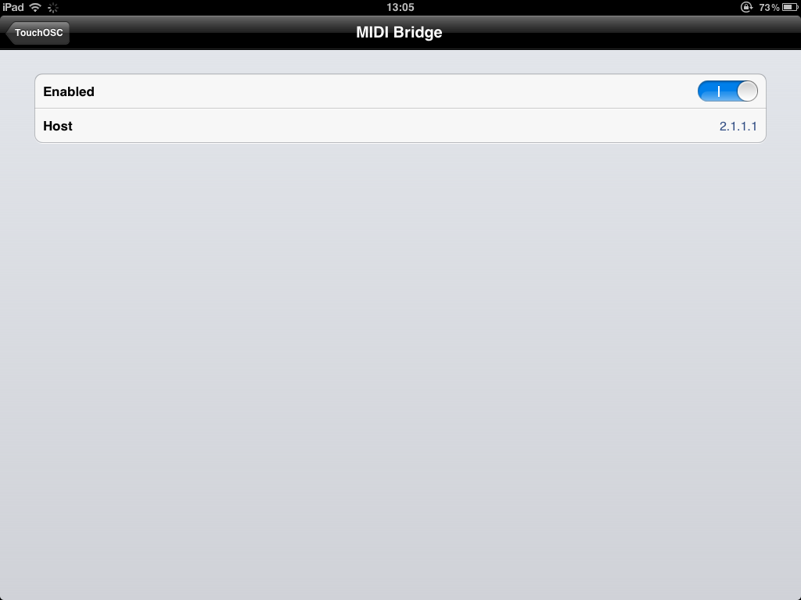
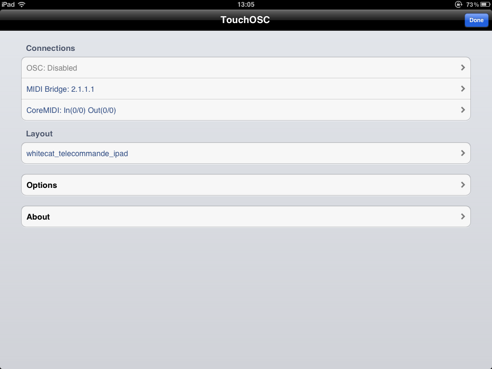
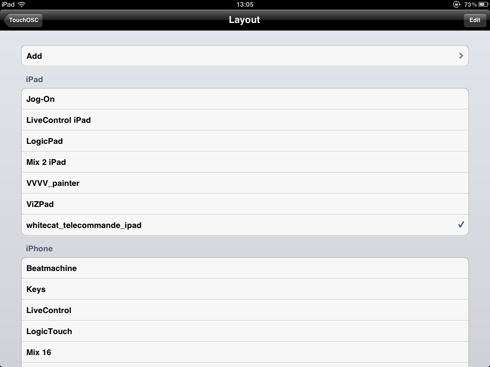
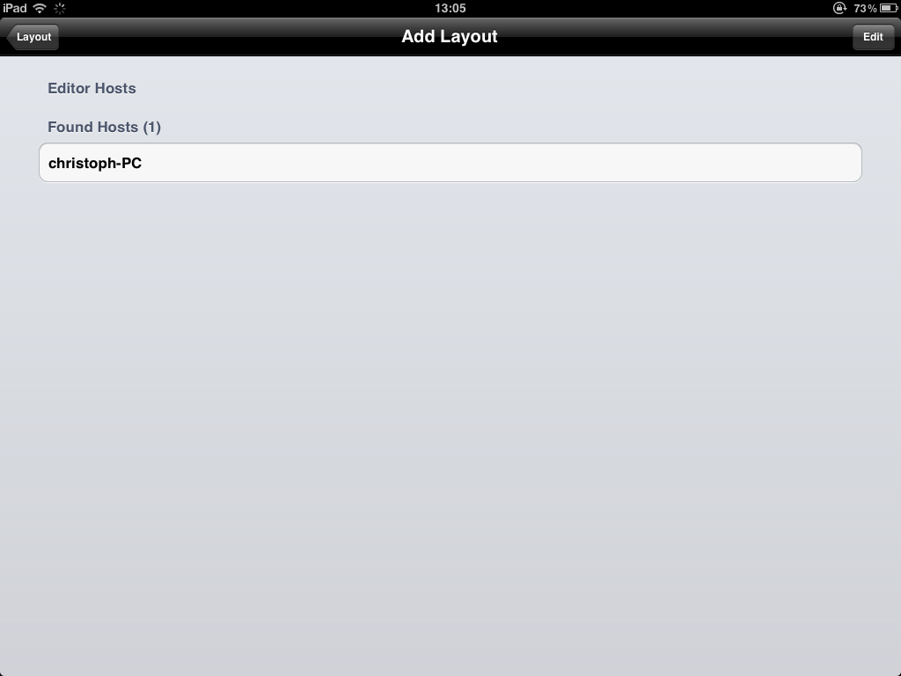
Vous venez de transferer le layout de votre ordi à votre téléphone/tablette.
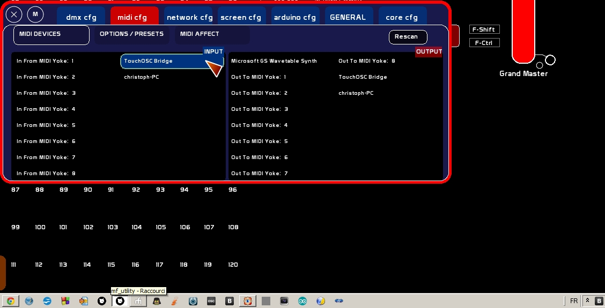